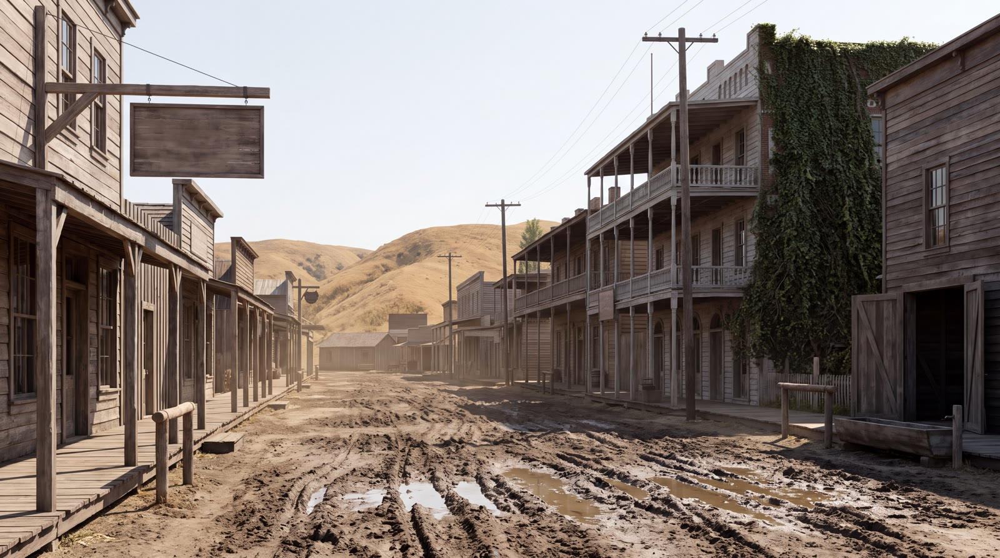
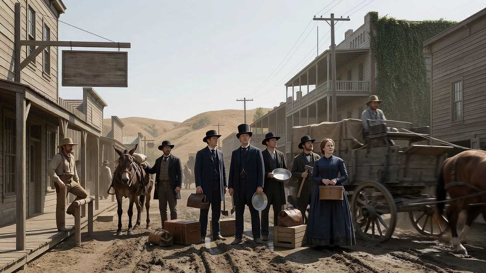
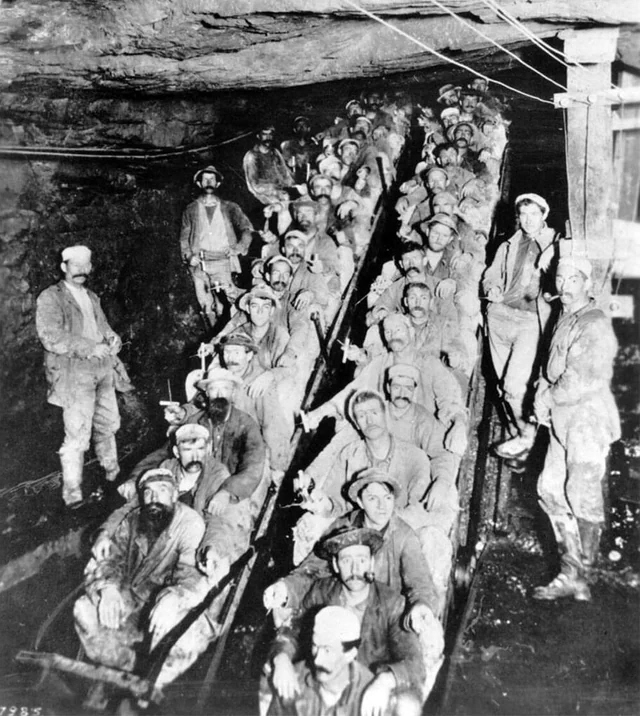
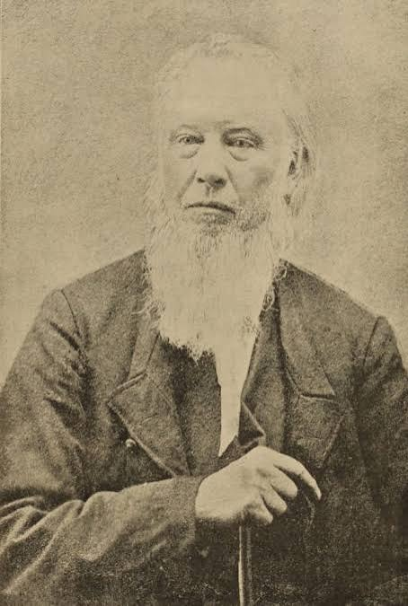
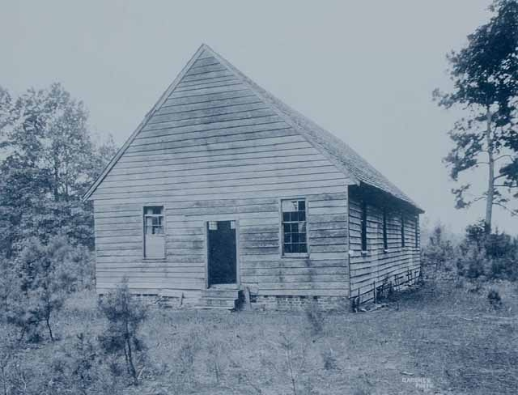
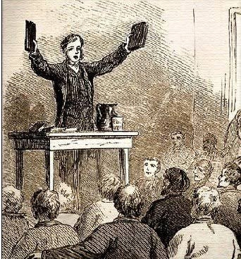

// 1863: A Gold Rush Story · watch on YouTube ↗
Oroville, California, May 1863. The easy gold is a decade gone, the mining is industrial, and the wagon traffic runs the other way — toward Idaho. An old minister works his week anyway: the sermon, the woodpile, the road, the strangers passing through town. At the end of it, a newspaper on the ground. The headline holds the earliest known printing of two words nobody owned: smart aleck.
The clipping is real. It ran in the Weekly Butte Record of Oroville on May 16, 1863 — the earliest known appearance of "smart aleck" in print — and the film composites the Library of Congress scan, not a recreation. The minister is invented; no record names the man in the story, and the film never claims the article is about him. What is documented and what is built is itemized below.
—A story is told of an old minister, who once announced to his hearers that on a following Sabbath he would tell his people what time to trim apple trees. The announcement had the desired effect, drawing out a large congregation. At the close of the service he announced that the time for his hearers to trim apple trees was when their tools were sharp.
// Set in type from the original. The film shows the real page — read the Library of Congress scan ↗
The item is a specimen, not a proven origin. The dictionaries decline to name a source for the phrase; it surfaces here first, in a small country weekly published by George H. Crossette, and nobody signed it — small weeklies signed nothing.
The joke lands because the minister told the truth. Announce a practical sermon, draw a crowd, deliver a proverb.
Origin: unknown. It surfaces in the American West and spreads east.
The film is an AI reconstruction. The minister was built once, in isolation, and composited into empty environment plates so he stays the same man in every shot. Motion came last. One thing was never generated: the newspaper. The headline in the film is the Library of Congress scan of the real page, composited in — the machine never wrote a word of it. How we recreate history →






Larrydojo builds character-consistent, fact-checked AI video — from public-domain adaptation to documented historical reconstruction. See the pipeline in the case studies, or start a project.